Artifact Rejection on Real EEG Data#
BrainBit & CalmSync Devices#
In the previous notebook we explored artifact rejection techniques (WT, EMD, CEEMDAN) on synthetic signals where we knew the ground truth. Now we apply these same ideas to real EEG recordings from two consumer-grade devices:
Device |
Channels |
Sampling Rate |
Format |
|---|---|---|---|
BrainBit |
8 (Fz, F3, Cz, F4, Pz, Fp1, Fp2, Oz) |
~250 Hz |
XDF |
CalmSync |
2 (Fp1, Fp2) |
~240 Hz |
JSON |
We focus on the Fp1 channel from each device — the frontal electrode most sensitive to eye blink artifacts. We take the first 30 seconds, preprocess with a basic bandpass + notch filter, and then decompose using EMD to visualise the Intrinsic Mode Functions (IMFs).
1. Load & Preprocess#
We load both devices, scale to µV, and apply a minimal preprocessing pipeline:
Bandpass filter: 0.1 – 45 Hz (removes DC drift and high-frequency noise)
Notch filter: 50 Hz (removes line noise)
DC removal: subtract the mean
Show code cell source
import numpy as np
import json
import matplotlib.pyplot as plt
import pyxdf
from scipy import signal
from PyEMD import EMD
from scipy.signal import welch
# ── Filter helper ────────────────────────────────────────────────────────────
def preprocess(x, fs, hp=0.1, lp=45.0, notch=50.0):
"""Bandpass 0.1-45 Hz + 50 Hz notch filter, then DC removal."""
sos_bp = signal.butter(4, [hp, lp], btype='band', fs=fs, output='sos')
x = signal.sosfiltfilt(sos_bp, x)
b, a = signal.iirnotch(notch, Q=30, fs=fs)
x = signal.filtfilt(b, a, x)
x -= x.mean()
return x
# ═══════════════════════════════════════════════════════════════════════════════
# LOAD BRAINBIT (XDF)
# ═══════════════════════════════════════════════════════════════════════════════
xdf_path = r"../Data/Brainbit/Archi_27febgoodbadimages.xdf"
streams, _ = pyxdf.load_xdf(xdf_path)
eeg_stream = None
for s in streams:
if s['info']['type'][0].lower() == 'eeg' and len(s['time_stamps']) > 0:
eeg_stream = s
break
raw_data = np.array(eeg_stream['time_series']).T
eeg_ts = np.array(eeg_stream['time_stamps'])
bb_fs = float(1.0 / np.median(np.diff(eeg_ts - eeg_ts[0])))
BB_CHAN_NAMES = ['Fz', 'F3', 'Cz', 'F4', 'Pz', 'Fp1', 'Fp2', 'Oz']
fp1_idx = BB_CHAN_NAMES.index('Fp1')
bb_fp1 = raw_data[fp1_idx, :].astype(float)
# Unit scaling
max_abs = np.max(np.abs(raw_data))
if max_abs < 1.0:
bb_fp1 *= 1e6
print(f"BrainBit units: Volts (max={max_abs:.4f}) \u2192 scaled to \u00b5V")
elif max_abs <= 1000:
bb_fp1 *= 1e3
print(f"BrainBit units: mV (max={max_abs:.2f}) \u2192 scaled to \u00b5V")
else:
print(f"BrainBit units: already \u00b5V (max={max_abs:.1f})")
bb_fp1 = preprocess(bb_fp1, bb_fs)
# ═══════════════════════════════════════════════════════════════════════════════
# LOAD CALMSYNC (JSON)
# ═══════════════════════════════════════════════════════════════════════════════
json_path = r"../Data/Calmsync/eeg_2026-02-27T16-33-22_2026-02-27T16-36-16.json"
with open(json_path) as f:
cs_json = json.load(f)
cs_fs = cs_json['samplingRateHz']
cs_raw = np.array(cs_json['data'], dtype=float)
# ADC \u2192 \u00b5V conversion
cs_fp1 = ((cs_raw[0] - 512) * 3.3 / 1024) / 1100 * 1e6
cs_fp1 = preprocess(cs_fp1, cs_fs)
# ═══════════════════════════════════════════════════════════════════════════════
# EXTRACT FIRST 30 SECONDS
# ═══════════════════════════════════════════════════════════════════════════════
duration = 30 # seconds
bb_n = int(duration * bb_fs)
bb_seg = bb_fp1[:bb_n]
bb_t = np.arange(bb_n) / bb_fs
cs_n = int(duration * cs_fs)
cs_seg = cs_fp1[:cs_n]
cs_t = np.arange(cs_n) / cs_fs
print(f"\nBrainBit Fp1: {bb_n} samples, fs={bb_fs:.1f} Hz, duration={duration}s")
print(f"CalmSync Fp1: {cs_n} samples, fs={cs_fs} Hz, duration={duration}s")
BrainBit units: Volts (max=0.2204) → scaled to µV
BrainBit Fp1: 7489 samples, fs=249.6 Hz, duration=30s
CalmSync Fp1: 7191 samples, fs=239.7237012519787 Hz, duration=30s
2. Raw EEG — First 30 Seconds#
Let’s first look at the raw filtered signal from both devices. Eye blink artifacts appear as large, sharp deflections — especially prominent on the Fp1 frontal channel.
Show code cell source
fig, axes = plt.subplots(2, 1, figsize=(14, 6), sharex=True)
axes[0].plot(bb_t, bb_seg, color='steelblue', linewidth=0.5)
axes[0].set_title('BrainBit — Fp1 (first 30s)', fontsize=12)
axes[0].set_ylabel('Amplitude (\u00b5V)')
axes[1].plot(cs_t, cs_seg, color='teal', linewidth=0.5)
axes[1].set_title('CalmSync — Fp1 (first 30s)', fontsize=12)
axes[1].set_ylabel('Amplitude (\u00b5V)')
axes[1].set_xlabel('Time (s)')
for ax in axes:
ax.grid(alpha=0.3)
fig.suptitle('Raw Filtered EEG — Fp1 Channel', fontsize=14, y=1.01)
plt.tight_layout()
plt.show()
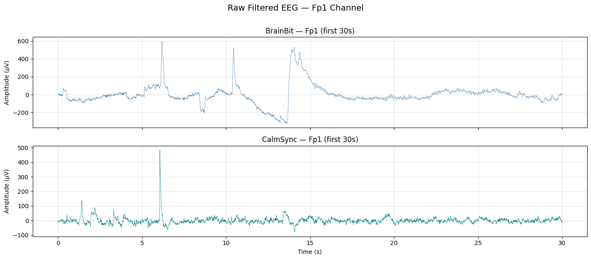
3. EMD Decomposition — BrainBit#
We apply Empirical Mode Decomposition to the BrainBit Fp1 signal. Each resulting IMF captures a different oscillatory mode — from the highest frequencies (IMF 1) down to the slowest trend (residual). Blink artifacts typically concentrate in the first few IMFs (high energy, low entropy, high kurtosis).
Show code cell source
# ═══════════════════════════════════════════════════════════════════════════════
# EMD — BrainBit Fp1
# ═══════════════════════════════════════════════════════════════════════════════
emd_bb = EMD()
imfs_bb = emd_bb.emd(bb_seg, bb_t)
n_imfs_bb = imfs_bb.shape[0]
print(f"BrainBit EMD: {n_imfs_bb} IMFs extracted")
# --- Plot IMFs ---
fig, axes = plt.subplots(n_imfs_bb + 1, 1,
figsize=(14, 2.0 * (n_imfs_bb + 1)), sharex=True)
# Original signal on top
axes[0].plot(bb_t, bb_seg, color='steelblue', linewidth=0.6)
axes[0].set_title('Original Signal (BrainBit Fp1)', fontsize=11, fontweight='bold')
axes[0].set_ylabel('\u00b5V')
# Compute PSD dominant frequency for each IMF
for i in range(n_imfs_bb):
f, psd = welch(imfs_bb[i], fs=bb_fs, nperseg=min(256, len(imfs_bb[i])))
dom_freq = f[np.argmax(psd)]
energy_pct = np.sum(imfs_bb[i]**2) / np.sum(bb_seg**2) * 100
color = '#e74c3c' if i >= n_imfs_bb - 2 else 'teal' # last 2 = slow trend
axes[i+1].plot(bb_t, imfs_bb[i], color=color, linewidth=0.5)
axes[i+1].set_title(
f'IMF {i+1} | Dominant freq: {dom_freq:.1f} Hz | '
f'Energy: {energy_pct:.1f}%',
fontsize=9)
axes[i+1].set_ylabel('\u00b5V', fontsize=8)
axes[-1].set_xlabel('Time (s)')
fig.suptitle('EMD Decomposition — BrainBit Fp1 (first 30s)',
fontsize=14, y=1.01)
plt.tight_layout()
plt.show()
BrainBit EMD: 9 IMFs extracted
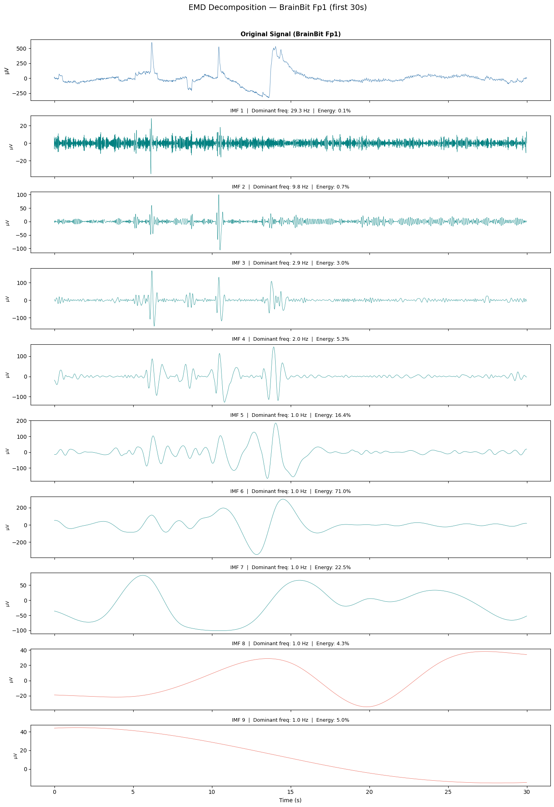
4. EMD Decomposition — CalmSync#
Same decomposition on the CalmSync Fp1 channel. Since CalmSync is a 2-channel consumer device with a different amplifier, the noise characteristics and artifact shapes may differ.
Show code cell source
# ═══════════════════════════════════════════════════════════════════════════════
# EMD — CalmSync Fp1
# ═══════════════════════════════════════════════════════════════════════════════
emd_cs = EMD()
imfs_cs = emd_cs.emd(cs_seg, cs_t)
n_imfs_cs = imfs_cs.shape[0]
print(f"CalmSync EMD: {n_imfs_cs} IMFs extracted")
# --- Plot IMFs ---
fig, axes = plt.subplots(n_imfs_cs + 1, 1,
figsize=(14, 2.0 * (n_imfs_cs + 1)), sharex=True)
axes[0].plot(cs_t, cs_seg, color='teal', linewidth=0.6)
axes[0].set_title('Original Signal (CalmSync Fp1)', fontsize=11, fontweight='bold')
axes[0].set_ylabel('\u00b5V')
for i in range(n_imfs_cs):
f, psd = welch(imfs_cs[i], fs=cs_fs, nperseg=min(512, len(imfs_cs[i])))
dom_freq = f[np.argmax(psd)]
energy_pct = np.sum(imfs_cs[i]**2) / np.sum(cs_seg**2) * 100
color = '#e74c3c' if i >= n_imfs_cs - 2 else 'darkorange'
axes[i+1].plot(cs_t, imfs_cs[i], color=color, linewidth=0.5)
axes[i+1].set_title(
f'IMF {i+1} | Dominant freq: {dom_freq:.1f} Hz | '
f'Energy: {energy_pct:.1f}%',
fontsize=9)
axes[i+1].set_ylabel('\u00b5V', fontsize=8)
axes[-1].set_xlabel('Time (s)')
fig.suptitle('EMD Decomposition — CalmSync Fp1 (first 30s)',
fontsize=14, y=1.01)
plt.tight_layout()
plt.show()
CalmSync EMD: 10 IMFs extracted
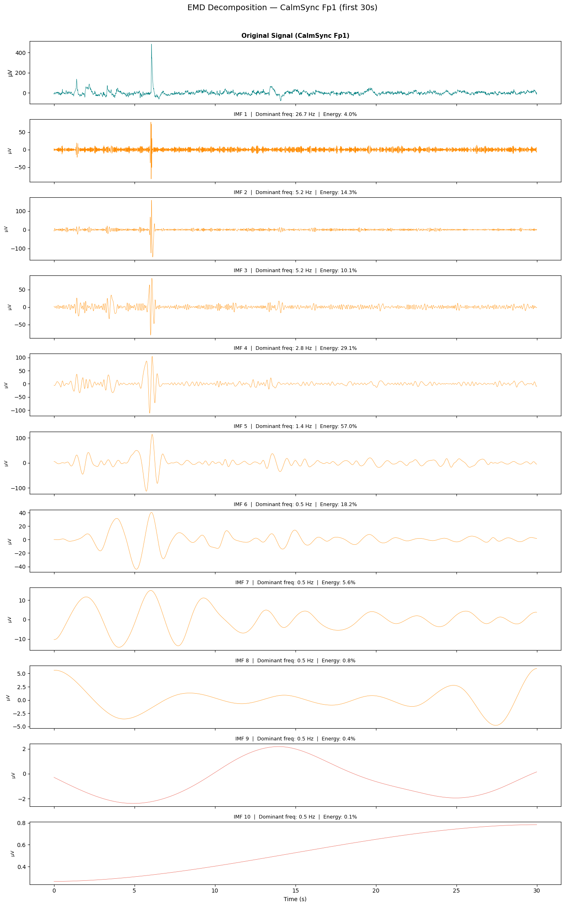
7. Hilbert Transform on IMFs — Visualising Mode Mixing#
The Hilbert Transform converts each IMF into an analytic signal, from which we extract the instantaneous frequency at every time point.
If EMD worked perfectly, each IMF would sit at a single, distinct frequency band — you’d see flat, well-separated horizontal lines. In practice, we see mode mixing: frequencies jumping within a single IMF, or the same frequency appearing in multiple IMFs. This is a fundamental limitation of vanilla EMD.
For each device we show two panels side by side:
Left: All IMFs stacked (time domain)
Right: Instantaneous frequency of each IMF superimposed on one plot (Hilbert–Huang spectrum)
Show code cell source
from scipy.signal import hilbert
# ── Hilbert instantaneous frequency helper ──────────────────────────────────
def instantaneous_frequency(imf, fs):
"""Compute instantaneous frequency from Hilbert transform of an IMF."""
analytic = hilbert(imf)
phase = np.unwrap(np.angle(analytic))
inst_freq = np.diff(phase) / (2.0 * np.pi) * fs
return inst_freq
# ── Color palette for IMFs ──────────────────────────────────────────────────
cmap = plt.cm.tab10
def plot_imfs_and_hilbert(imfs, t, fs, device_name, sig_color):
"""Two-panel figure: Left = stacked IMFs, Right = Hilbert inst. freq."""
n_imfs = imfs.shape[0]
# Skip the last IMF (residual/trend) for Hilbert — it's not oscillatory
n_plot = min(n_imfs - 1, 8)
fig, (ax_imf, ax_hht) = plt.subplots(1, 2, figsize=(18, 8),
gridspec_kw={'width_ratios': [1, 1.2]})
# ── Left panel: stacked IMFs ────────────────────────────────────────────
offsets = []
spacing = 0
for i in range(n_plot):
offset = -i * np.max(np.abs(imfs[:n_plot])) * 0.6
offsets.append(offset)
ax_imf.plot(t, imfs[i] + offset, color=cmap(i), linewidth=0.5,
label=f'IMF {i+1}')
ax_imf.set_xlabel('Time (s)', fontsize=11)
ax_imf.set_ylabel('IMFs (stacked)', fontsize=11)
ax_imf.set_title(f'{device_name} — IMFs (time domain)', fontsize=12)
ax_imf.legend(fontsize=8, loc='upper right', ncol=2)
ax_imf.set_yticks([])
ax_imf.grid(alpha=0.2)
# ── Right panel: Hilbert instantaneous frequencies ──────────────────────
for i in range(n_plot):
inst_freq = instantaneous_frequency(imfs[i], fs)
# Clip to reasonable EEG range for display
inst_freq = np.clip(inst_freq, 0, fs / 2)
ax_hht.plot(t[:-1], inst_freq, color=cmap(i), linewidth=0.4,
alpha=0.7, label=f'IMF {i+1}')
ax_hht.set_xlabel('Time (s)', fontsize=11)
ax_hht.set_ylabel('Instantaneous Frequency (Hz)', fontsize=11)
ax_hht.set_title(f'{device_name} — Hilbert Instantaneous Frequency', fontsize=12)
ax_hht.set_ylim(0, 50)
ax_hht.axhline(8, color='gray', ls='--', lw=0.7, alpha=0.5)
ax_hht.axhline(13, color='gray', ls='--', lw=0.7, alpha=0.5)
ax_hht.axhline(30, color='gray', ls='--', lw=0.7, alpha=0.5)
ax_hht.text(t[-1] + 0.2, 8, 'α', fontsize=9, color='gray', va='center')
ax_hht.text(t[-1] + 0.2, 13, 'β', fontsize=9, color='gray', va='center')
ax_hht.text(t[-1] + 0.2, 30, 'γ', fontsize=9, color='gray', va='center')
ax_hht.legend(fontsize=8, loc='upper right', ncol=2)
ax_hht.grid(alpha=0.2)
fig.suptitle(
f'{device_name} — IMF Decomposition & Hilbert Instantaneous Frequency\n'
f'Mode mixing visible where IMF frequency lines overlap or jump',
fontsize=13, y=1.03)
plt.tight_layout()
plt.show()
# ── BrainBit ────────────────────────────────────────────────────────────────
print("BrainBit Fp1")
plot_imfs_and_hilbert(imfs_bb, bb_t, bb_fs, "BrainBit Fp1", "steelblue")
# ── CalmSync ────────────────────────────────────────────────────────────────
print("\nCalmSync Fp1")
plot_imfs_and_hilbert(imfs_cs, cs_t, cs_fs, "CalmSync Fp1", "teal")
BrainBit Fp1
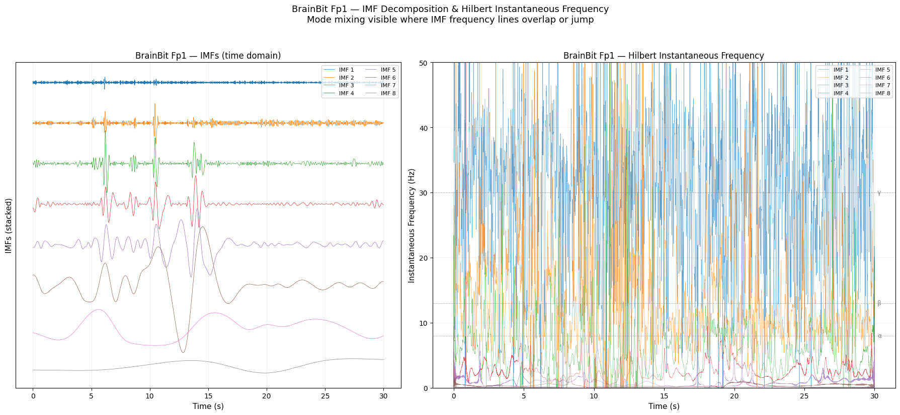
CalmSync Fp1
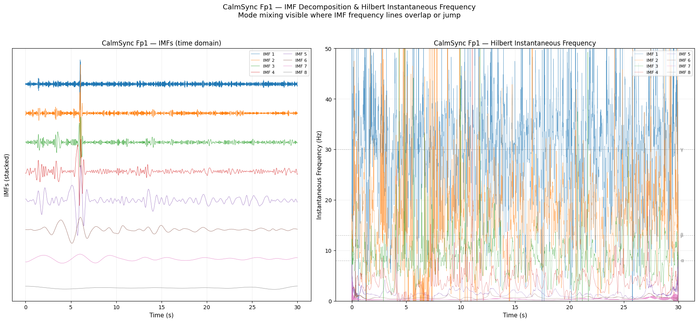
8. EEMD Decomposition#
Ensemble EMD adds white noise to the signal multiple times, runs EMD on each noisy realisation, and averages the resulting IMFs. This helps reduce mode mixing — we should see cleaner frequency separation in the Hilbert plot compared to vanilla EMD above.
Show code cell source
from PyEMD import EEMD
# ═══════════════════════════════════════════════════════════════════════════════
# EEMD — BrainBit Fp1
# ═══════════════════════════════════════════════════════════════════════════════
eemd = EEMD(trials=50, noise_width=0.1)
eemd_imfs_bb = eemd.eemd(bb_seg, bb_t)
n_eemd_bb = eemd_imfs_bb.shape[0]
print(f"BrainBit EEMD: {n_eemd_bb} IMFs extracted")
# --- Plot IMFs ---
fig, axes = plt.subplots(n_eemd_bb + 1, 1,
figsize=(14, 2.0 * (n_eemd_bb + 1)), sharex=True)
axes[0].plot(bb_t, bb_seg, color='steelblue', linewidth=0.6)
axes[0].set_title('Original Signal (BrainBit Fp1)', fontsize=11, fontweight='bold')
axes[0].set_ylabel('\u00b5V')
for i in range(n_eemd_bb):
f, psd = welch(eemd_imfs_bb[i], fs=bb_fs, nperseg=min(256, len(eemd_imfs_bb[i])))
dom_freq = f[np.argmax(psd)]
energy_pct = np.sum(eemd_imfs_bb[i]**2) / np.sum(bb_seg**2) * 100
axes[i+1].plot(bb_t, eemd_imfs_bb[i], color=cmap(i % 10), linewidth=0.5)
axes[i+1].set_title(
f'IMF {i+1} | Dominant freq: {dom_freq:.1f} Hz | Energy: {energy_pct:.1f}%',
fontsize=9)
axes[i+1].set_ylabel('\u00b5V', fontsize=8)
axes[-1].set_xlabel('Time (s)')
fig.suptitle('EEMD Decomposition — BrainBit Fp1 (first 30s)', fontsize=14, y=1.01)
plt.tight_layout()
plt.show()
# --- Hilbert ---
print("\nBrainBit EEMD — Hilbert")
plot_imfs_and_hilbert(eemd_imfs_bb, bb_t, bb_fs, "BrainBit EEMD", "steelblue")
# ═══════════════════════════════════════════════════════════════════════════════
# EEMD — CalmSync Fp1
# ═══════════════════════════════════════════════════════════════════════════════
eemd_imfs_cs = eemd.eemd(cs_seg, cs_t)
n_eemd_cs = eemd_imfs_cs.shape[0]
print(f"\nCalmSync EEMD: {n_eemd_cs} IMFs extracted")
fig, axes = plt.subplots(n_eemd_cs + 1, 1,
figsize=(14, 2.0 * (n_eemd_cs + 1)), sharex=True)
axes[0].plot(cs_t, cs_seg, color='teal', linewidth=0.6)
axes[0].set_title('Original Signal (CalmSync Fp1)', fontsize=11, fontweight='bold')
axes[0].set_ylabel('\u00b5V')
for i in range(n_eemd_cs):
f, psd = welch(eemd_imfs_cs[i], fs=cs_fs, nperseg=min(512, len(eemd_imfs_cs[i])))
dom_freq = f[np.argmax(psd)]
energy_pct = np.sum(eemd_imfs_cs[i]**2) / np.sum(cs_seg**2) * 100
axes[i+1].plot(cs_t, eemd_imfs_cs[i], color=cmap(i % 10), linewidth=0.5)
axes[i+1].set_title(
f'IMF {i+1} | Dominant freq: {dom_freq:.1f} Hz | Energy: {energy_pct:.1f}%',
fontsize=9)
axes[i+1].set_ylabel('\u00b5V', fontsize=8)
axes[-1].set_xlabel('Time (s)')
fig.suptitle('EEMD Decomposition — CalmSync Fp1 (first 30s)', fontsize=14, y=1.01)
plt.tight_layout()
plt.show()
print("\nCalmSync EEMD — Hilbert")
plot_imfs_and_hilbert(eemd_imfs_cs, cs_t, cs_fs, "CalmSync EEMD", "teal")
BrainBit EEMD: 12 IMFs extracted
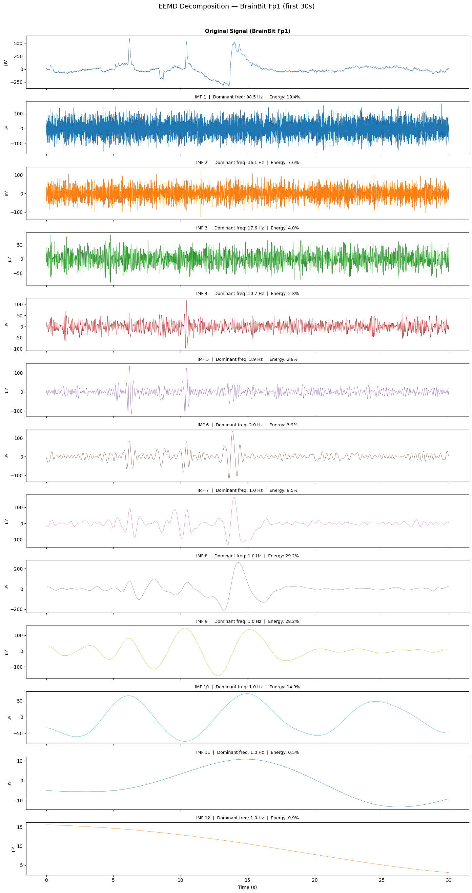
BrainBit EEMD — Hilbert
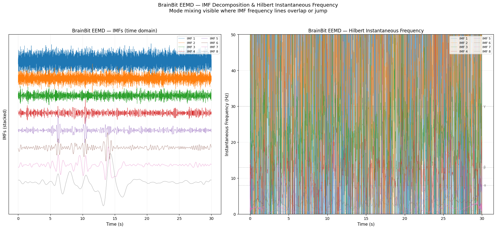
CalmSync EEMD: 12 IMFs extracted
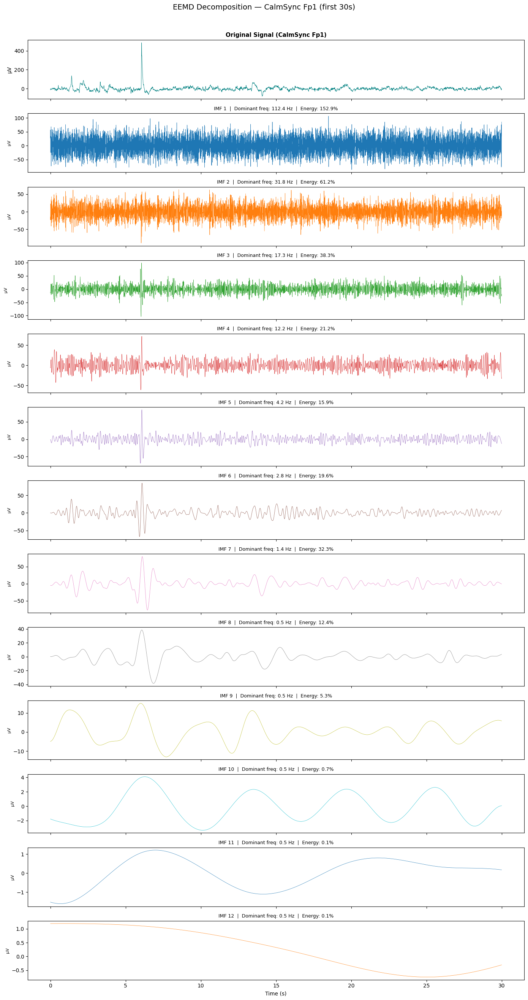
CalmSync EEMD — Hilbert
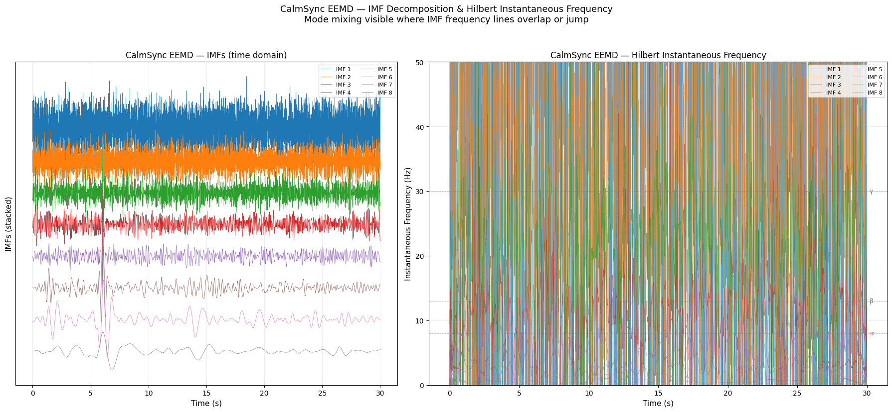
9. CEEMDAN Decomposition#
CEEMDAN (Complete Ensemble EMD with Adaptive Noise) is the most refined variant. It uses complementary positive/negative noise pairs, producing a more complete decomposition with less residual noise. Compare the Hilbert plots here with EMD (section 7) and EEMD (section 8) — the instantaneous frequency lines should be the most stable and well-separated.
Show code cell source
from PyEMD import CEEMDAN
# ═══════════════════════════════════════════════════════════════════════════════
# CEEMDAN — BrainBit Fp1
# ═══════════════════════════════════════════════════════════════════════════════
ceemdan = CEEMDAN(trials=50, epsilon=0.1)
ceemdan_imfs_bb = ceemdan.ceemdan(bb_seg, bb_t)
n_ceemdan_bb = ceemdan_imfs_bb.shape[0]
print(f"BrainBit CEEMDAN: {n_ceemdan_bb} IMFs extracted")
# --- Plot IMFs ---
fig, axes = plt.subplots(n_ceemdan_bb + 1, 1,
figsize=(14, 2.0 * (n_ceemdan_bb + 1)), sharex=True)
axes[0].plot(bb_t, bb_seg, color='steelblue', linewidth=0.6)
axes[0].set_title('Original Signal (BrainBit Fp1)', fontsize=11, fontweight='bold')
axes[0].set_ylabel('\u00b5V')
for i in range(n_ceemdan_bb):
f, psd = welch(ceemdan_imfs_bb[i], fs=bb_fs, nperseg=min(256, len(ceemdan_imfs_bb[i])))
dom_freq = f[np.argmax(psd)]
energy_pct = np.sum(ceemdan_imfs_bb[i]**2) / np.sum(bb_seg**2) * 100
axes[i+1].plot(bb_t, ceemdan_imfs_bb[i], color=cmap(i % 10), linewidth=0.5)
axes[i+1].set_title(
f'IMF {i+1} | Dominant freq: {dom_freq:.1f} Hz | Energy: {energy_pct:.1f}%',
fontsize=9)
axes[i+1].set_ylabel('\u00b5V', fontsize=8)
axes[-1].set_xlabel('Time (s)')
fig.suptitle('CEEMDAN Decomposition — BrainBit Fp1 (first 30s)', fontsize=14, y=1.01)
plt.tight_layout()
plt.show()
# --- Hilbert ---
print("\nBrainBit CEEMDAN — Hilbert")
plot_imfs_and_hilbert(ceemdan_imfs_bb, bb_t, bb_fs, "BrainBit CEEMDAN", "steelblue")
# ═══════════════════════════════════════════════════════════════════════════════
# CEEMDAN — CalmSync Fp1
# ═══════════════════════════════════════════════════════════════════════════════
ceemdan_imfs_cs = ceemdan.ceemdan(cs_seg, cs_t)
n_ceemdan_cs = ceemdan_imfs_cs.shape[0]
print(f"\nCalmSync CEEMDAN: {n_ceemdan_cs} IMFs extracted")
fig, axes = plt.subplots(n_ceemdan_cs + 1, 1,
figsize=(14, 2.0 * (n_ceemdan_cs + 1)), sharex=True)
axes[0].plot(cs_t, cs_seg, color='teal', linewidth=0.6)
axes[0].set_title('Original Signal (CalmSync Fp1)', fontsize=11, fontweight='bold')
axes[0].set_ylabel('\u00b5V')
for i in range(n_ceemdan_cs):
f, psd = welch(ceemdan_imfs_cs[i], fs=cs_fs, nperseg=min(512, len(ceemdan_imfs_cs[i])))
dom_freq = f[np.argmax(psd)]
energy_pct = np.sum(ceemdan_imfs_cs[i]**2) / np.sum(cs_seg**2) * 100
axes[i+1].plot(cs_t, ceemdan_imfs_cs[i], color=cmap(i % 10), linewidth=0.5)
axes[i+1].set_title(
f'IMF {i+1} | Dominant freq: {dom_freq:.1f} Hz | Energy: {energy_pct:.1f}%',
fontsize=9)
axes[i+1].set_ylabel('\u00b5V', fontsize=8)
axes[-1].set_xlabel('Time (s)')
fig.suptitle('CEEMDAN Decomposition — CalmSync Fp1 (first 30s)', fontsize=14, y=1.01)
plt.tight_layout()
plt.show()
print("\nCalmSync CEEMDAN — Hilbert")
plot_imfs_and_hilbert(ceemdan_imfs_cs, cs_t, cs_fs, "CalmSync CEEMDAN", "teal")
BrainBit CEEMDAN: 11 IMFs extracted
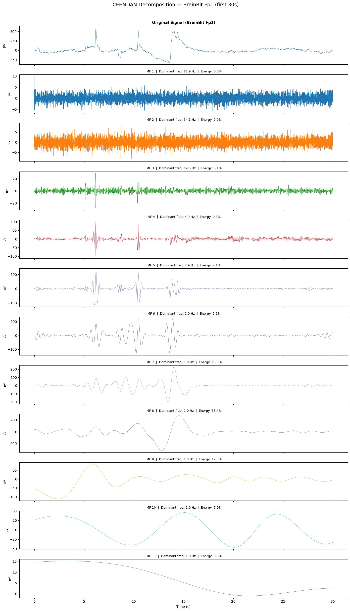
BrainBit CEEMDAN — Hilbert
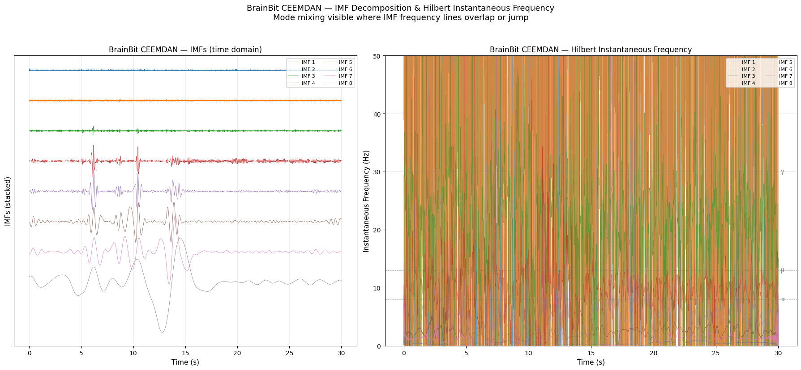
CalmSync CEEMDAN: 12 IMFs extracted
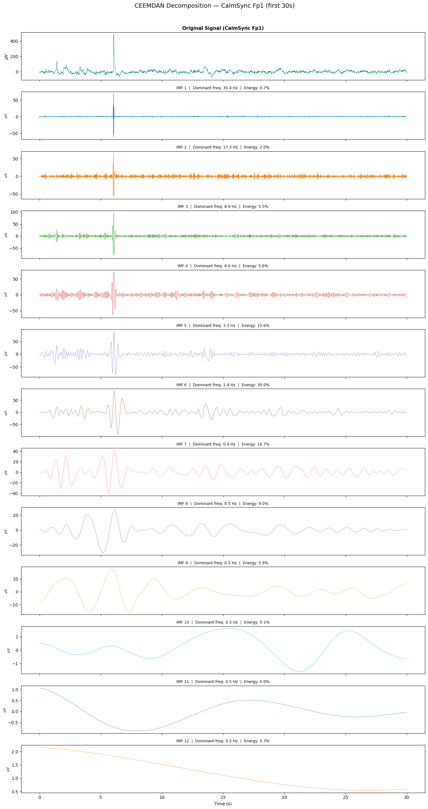
CalmSync CEEMDAN — Hilbert
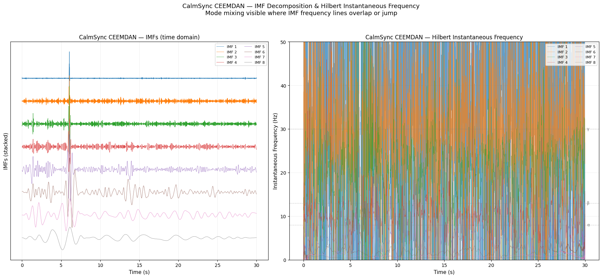